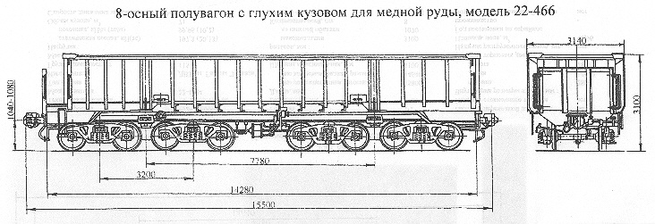

Назначение: для перевозки крупнокусковой медной руды
Параметры
| Номер проекта | 466.00.001 |
| Технические условия | ТУ 24.05.124-84 |
| Модель вагона | 22-466 |
| Тип вагона | |
| Изготовитель | ДВЗ им. Газеты "Правда" |
| Грузоподъемность, т | 105 |
| Масса тары вагона, т | 44,4 |
| Нагрузка: статическая осевая, кН(тс) |
188,5(19,11) |
| погонная, кН/м(тс/м) | 97,3(9,73) |
| Объем кузова, м³ | 63,3 |
| Скорость конструкционная, км/ч: порожнего |
120 |
| груженого | 80 |
| Габарит | 1-Т |
| База вагона, мм | 7780 |
| Длина, мм: по осям сцепления автосцепок |
15500 |
| по концевым балкам рамы | 14280 |
| Ширина максимальная, мм | 3140 |
| Высота от уровня верха головок рельсов, мм: максимальная |
3100 |
| до уровня пола | 1544 |
| Количество осей, шт. | 8 |
| Модель 4-осной тележки | 18-101 |
| Наличие переходной площадки | есть |
| То же с ручным тормозом | нет |
| Наличие стояночного тормоза | есть |
| Внутренние размеры кузова, мм: ширина |
2852 |
| длина | 13456 |
| высота | 1556 |
| Наличие торцовых дверей | нет |
| Наличие разгрузочных люков | нет |
| Площадь пола, м² | 40,67 |
| Год постановки на серийное производство | 1967 |
| Возможность установки буфера | нет |